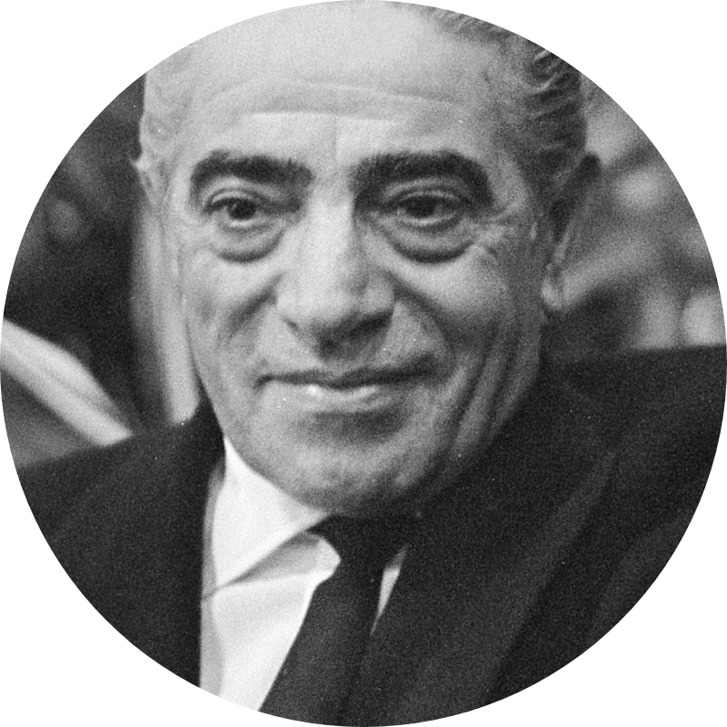

Aristotle Onassis
1906-1975
One of the richest people in the 20th century
Aristotle Socrates Onassis (/oʊˈnæsɪs/, US also /-ˈnɑː-/;[1] Greek: Αριστοτέλης Ωνάσης, romanized: Aristotélis Onásis, IPA: [aristoˈtelis oˈnasis]; 20 January 1906 – 15 March 1975),[2] commonly called Ari or Aristo Onassis, was a Greek[3][4] shipping magnate who amassed the world's largest privately owned shipping fleet and was one of the world's richest and most famous men.[5]
